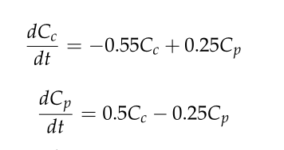
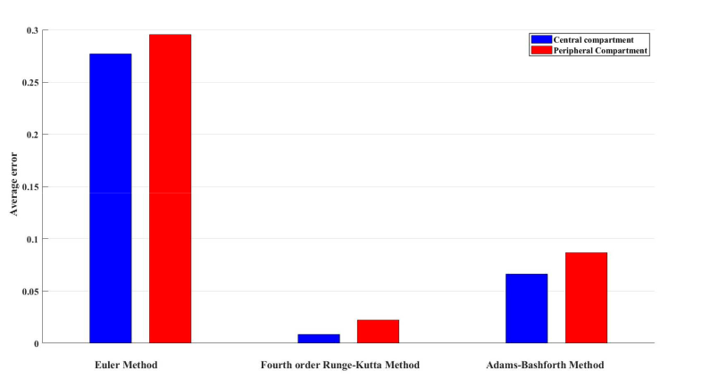

Modelling Drug Kinetics with Mathematical Precision
A two-compartment pharmacokinetic model that predicts drug concentration in the bloodstream and tissues, built to improve antibiotic dosing for sepsis patients.

Why Dosing Gets It Wrong
In African hospitals, clinicians rely on weight-based dosing tables that cannot account for individual physiology. Critically ill sepsis patients distribute drugs differently, and the consequences of getting it wrong with antibiotics like gentamicin are severe and irreversible.
This project builds a mathematical framework that predicts, at any moment after injection, exactly how much drug is in the bloodstream and how much has reached the tissues.
Read the Full Context →A Two-Compartment ODE System
The model treats the body as two connected spaces: the central compartment (bloodstream) and the peripheral compartment (tissues). Drug concentration in each is governed by coupled first-order linear ODEs with three rate constants: k₁₀, k₁₂, and k₂₁.
dCp/dt = k₁₂Cc − k₂₁Cp

Simulating Drug Concentration Profiles
We implemented and compared three solvers: Euler, fourth-order Runge–Kutta, and Adams–Bashforth–Moulton, to simulate how gentamicin distributes over a 10-hour window. Each is benchmarked against the exact analytical solution.
View Simulation Results →What the Paper Actually Contributed
The underlying ODE system is the classical mammillary open two-compartment model, unchanged from Gibaldi (1969). The paper's contribution sits entirely in the numerical methods comparison. We examine both what was retained from the classical model and what the authors actually did that was new.
Read the Analysis →
Meet the Team
We are a team of six (6) students from Ashesi University, combining backgrounds in mathematics, computer science, and engineering to bridge abstract modelling and real clinical outcomes.
Meet the Team →